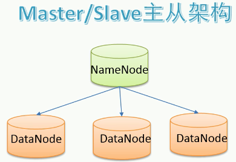
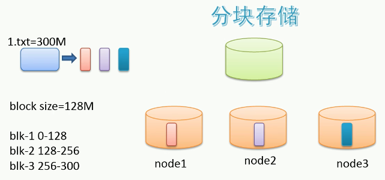
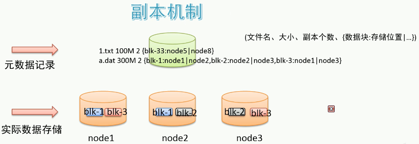
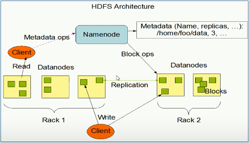

TreeviewCopyright © qgao 2021-* all right reserved, powered by aleen42
hadoop分布式文件系统
缩写：HDFS。
1 设计目标
- 硬件故障是常态
- 流式读取数据：被设计成用于批处理（一批次一批次的），不追求低延时的用户交互体验。
- 大文件
- write-one-read-many访问模型：数据产生后不再用于修改，只用于分析。
- 移动程序优于移动数据
2 主从架构
一主多从。
- namenode是主结点：命名空间，记录目录树，元数据。
- datanode是从结点：真正的文件内数据。

3 分块存储
将文件从物理上真的分块(block)了。
块的大小可以通过配置，参数位于hdfs-default.xml中的dfs.blocksize，hadoop3的默认大小为128MB。

4 副本机制
文件的所有block都会有副本。
每个文件的block大小（dfs.blocksize）和副本系数（dfs.replication）都是可配置的。
副本系数默认是3，即额外复制2份，加本身一共3份。
副本系数可以在文件创建时指定，也可以之后通过命令改变。

5 namespace
层次型文件组织结构，即：文件夹+文件。
namenode主角色负责维护namespace的元数据.
6 元数据
两类：
- 文件自身属性信息：文件名称、权限、修改时间、大小等
- 文件块位置映射信息：文件和datanode之间的映射信息，即哪个块位于哪个结点上。
7 具体存储
由datanode结点承担，每一个block可在多个节点存储。

rack机架：放置机器的架子。